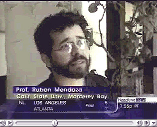

Professor Mendoza as pictured during
a 1998 CNN interview regarding his project at Old Mission San Juan Bautista.
Video footage copyright CNN (Cable
News Network Headline News) 1998.
Video 1:
Man on a Mission. CNN HeadlineNews, Cable News Network, New
York. Aired August 22, 1998.
Video 2:
Meet the Mentor Video: Dr. Ruben Mendoza, Archaeologist. New
York: Terra Associates and Scholastic Incorporated, 1996.
Video 3:
Ancient Cultures and Modern Chemistry. In CHEMedia Videodisc
and Computer Simulation. Upper SaddleRiver, NJ: Prentice-Hall, Inc.,
1996.
Video 4:
The Diet Detectives. In CNN Presents: Food to Die For, and
Headline
News, Cable News Network, CNN Nutrition Special Reports, New York,
N.Y. Aired: November 24, 1994.
Video 5:
The Dirt Detectives: The Crescent Rockshelter. In CNN Scienceand
Technology Reports, and Headline News, Cable NewsNetwork (CNN),
Atlanta, GA. Aired December 20, 1994.
Video 6:
Hispanic Spotlight Awards: Ruben G. Mendoza. KWGN-TV,
Denver's 2, Universo Dos, 1994.
Video 7:
An Undocumented Heritage. Aired on Colorado Getaways,
Channel 4, Denver, Colorado, March 26, 1994.
Video 8:
Prentice
Hall MediaLab: Introduction to the Hominoids. June 6, 2002.